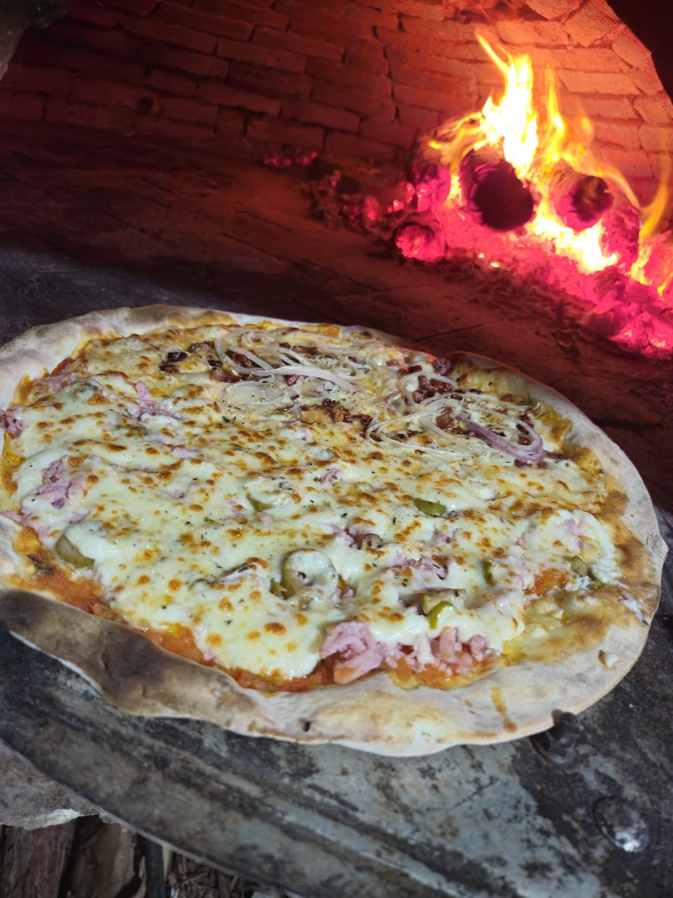

Início · Maré + Mestre
Maré + Mestre = Forno a Lenha
Duas pizzarias de bairro de Lauro de Freitas que se juntaram numa só, em Ipitanga, com a mesma equipe.
Pizzaria Forno a Lenha de IpitangaPizzaria a lenha · R. Luíz Brito, 1 · Ipitanga
24/08/2024
A união faz a pizza
“A união faz a pizza ainda mais saborosa! Maré & Mestre se tornaram um só, e uma nova jornada de delícias começa agora.”post de lançamento no Instagram, 24/08/2024
“O que já era bom, agora ficou melhor! Maré pizza e Metre das pizzas se juntaram e formaram a: Pizzaria Forno a Lenha de Ipitanga! Com a mesma gestão, a mesma equipe e muito mais sabor!”descrição da loja no cardápio digital
Herança
O molho da Maré, a Moda do Mestre
Molho de tomate da Maré
Está na descrição de quase todos os sabores: “Massa fininha e crocante, molho de tomate da Maré…”
Moda do Mestre
Carne do sol, banana da terra e queijo coalho. Grande por R$ 79,90.
O forno
A lenha no nome
“A única forno a lenha de Ipitanga!”bio da casa no Instagram

Hoje
Pizza, esfiha e rodízio
A casa faz entrega, retirada na loja e atende no salão, com rodízio de pizza e esfiha. O cardápio digital tem 43 sabores de pizza e 26 de esfiha.
@pizzariafornoalenhadeipitangaDúvidas frequentes
Perguntas comuns
A Maré Pizza e a Mestre das Pizzas ainda existem?
Elas se juntaram e hoje são a Pizzaria Forno a Lenha de Ipitanga, com a mesma equipe.
Onde fica a loja?
R. Luíz Brito, 1, loja 4 · Ipitanga, Lauro de Freitas.
Bateu a fome?
Pede pizza. Ou esfiha. Ou as duas.
Monte o pedido no site e mande pronto para o WhatsApp da casa. Entrega, retirada na loja ou mesa no salão.